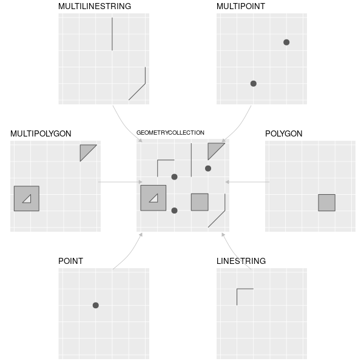
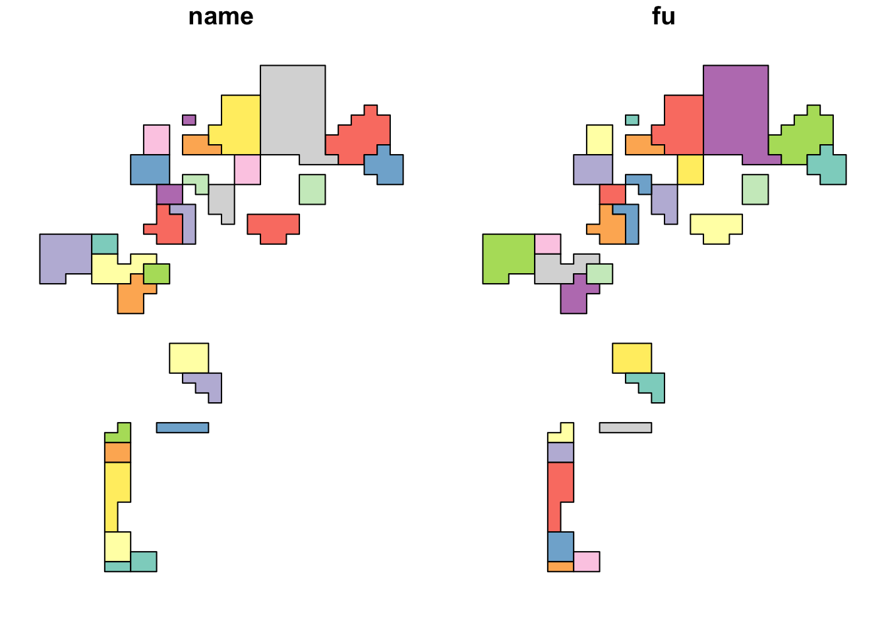
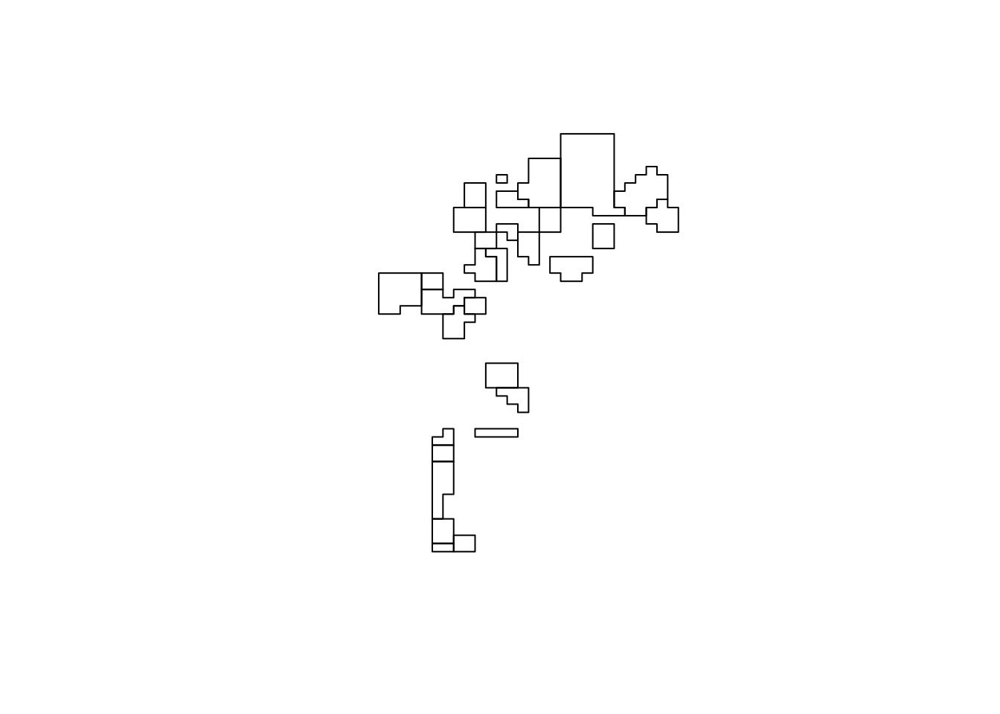
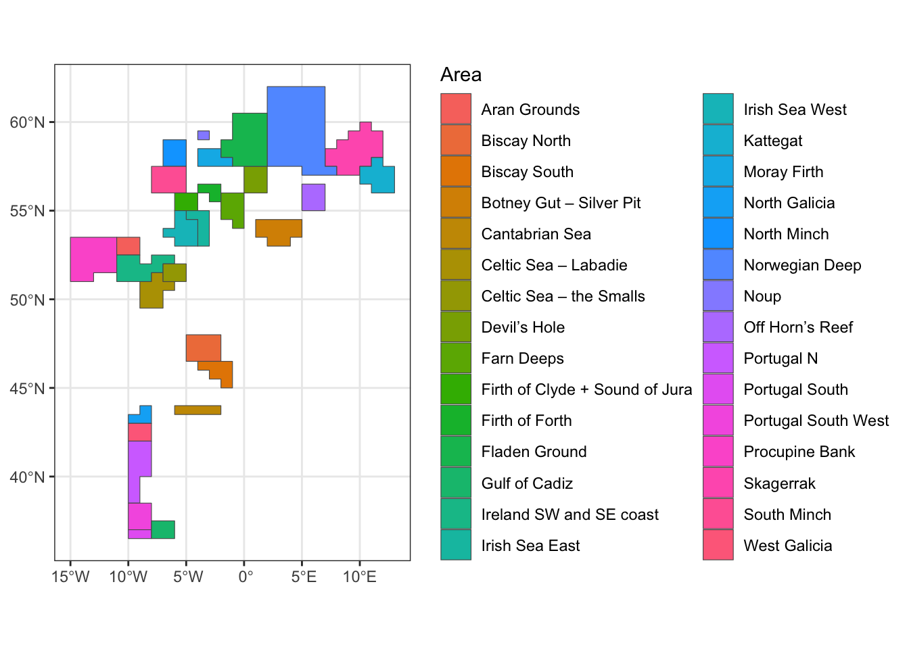
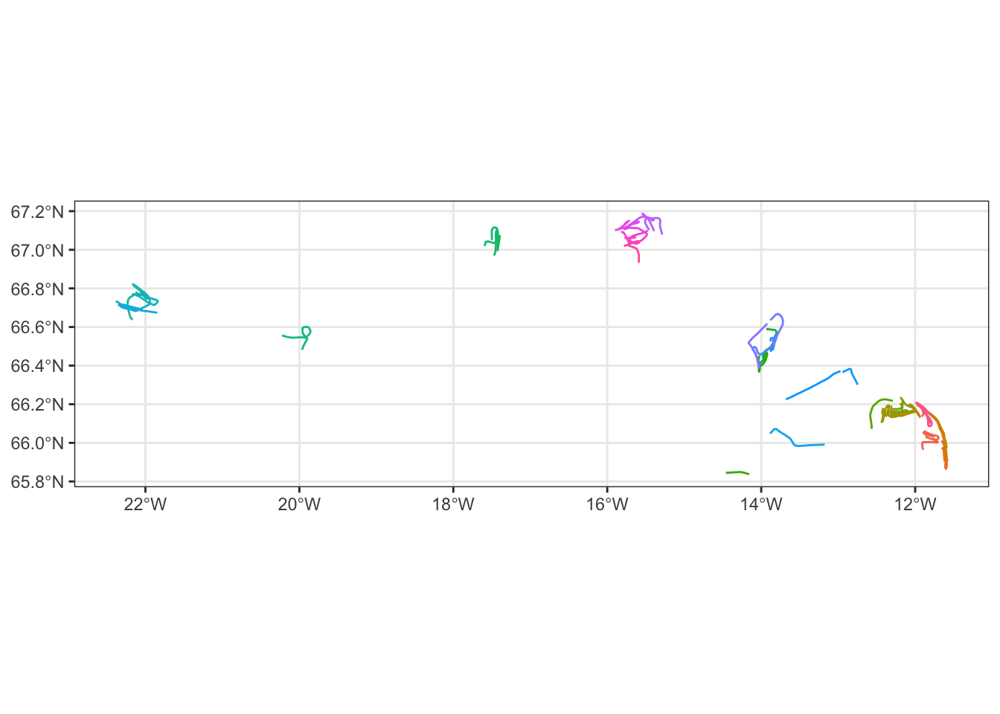
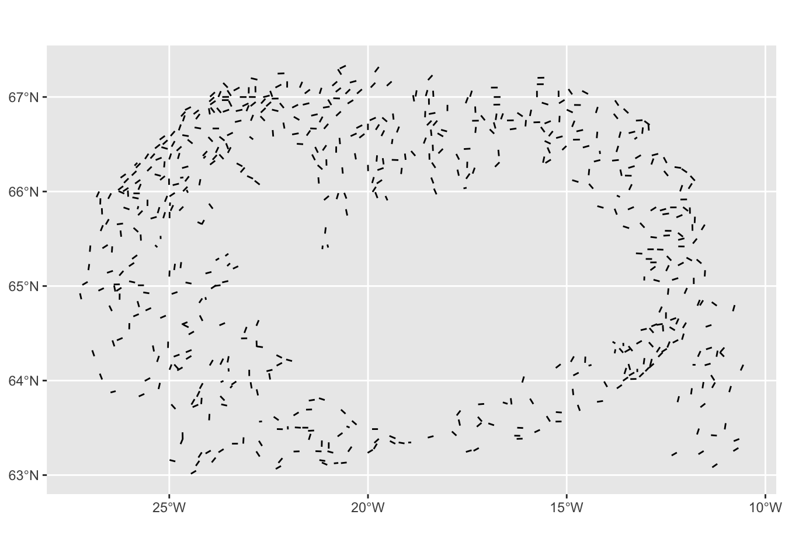
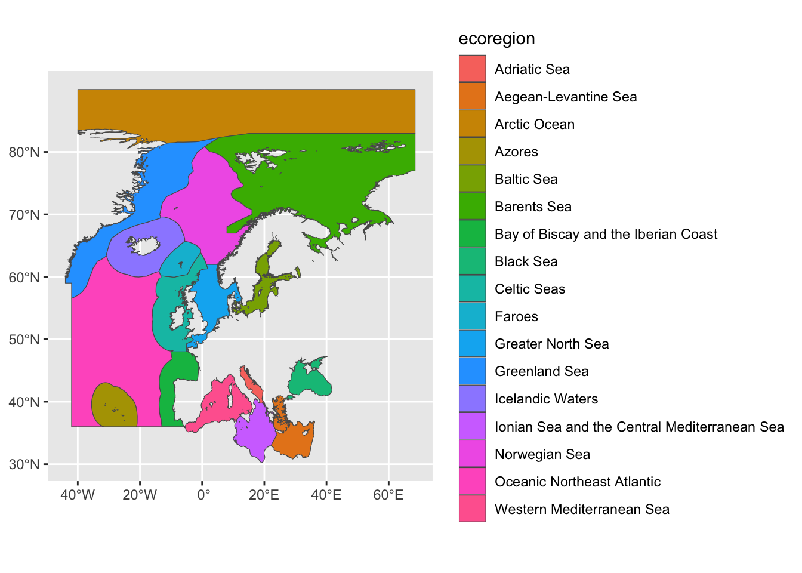
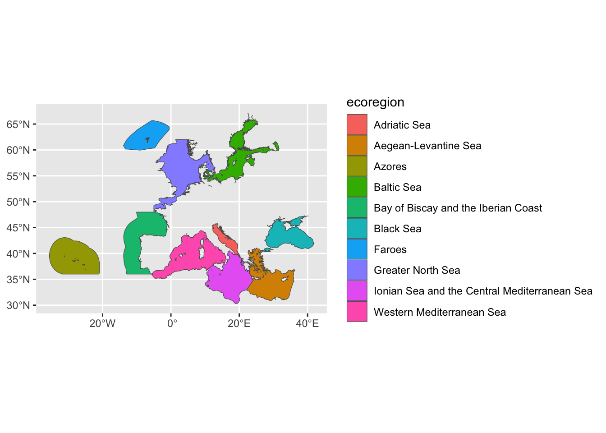

library(tidyverse)
library(sf)Simple features
Vector data in R
The sf package is the standard way to work with vector spatial data in R. It provides a class – also called sf – that represents spatial features as an extension of a regular data frame, integrating naturally with tidyverse tools like dplyr and ggplot2. It replaced the older sp package in 2016; the history is covered in the Spatial data concepts chapter.
You will encounter sp in older code and in some packages that have not yet migrated. Conversion between sf and sp is covered at the end of this chapter.
The simple feature standard
A feature is any object or observation in the real world that has a location. Features have two components:
- A geometry: where on Earth the feature is located.
- Attributes: properties describing the feature (species, abundance, depth, etc.).
Simple features is an international open standard (OGC/ISO 19125) specifying how to represent two-dimensional geometries using points and straight lines (no curves). It defines:
- A unified way to represent vector data.
- A set of topological predicates and operations.
- Well-known text (WKT) and binary (WKB) encodings.
- Support across spatial databases (PostGIS, SQLite/SpatiaLite), GeoJSON, GDAL, GEOS, and many other tools.
The sf package implements this standard in R, which means sf objects are directly compatible with spatial databases and other software that follows the same standard.
Geometry types
The seven most common simple feature geometry types are:
| Type | Description |
|---|---|
| POINT | A single location |
| LINESTRING | A sequence of points connected by straight lines |
| POLYGON | A closed ring of points forming an area |
| MULTIPOINT | A set of points as a single feature |
| MULTILINESTRING | A set of linestrings as a single feature |
| MULTIPOLYGON | A set of polygons as a single feature |
| GEOMETRYCOLLECTION | A mix of any geometry types |

Additional types exist in the standard (CIRCULARSTRING, SURFACE, TRIANGLE, etc.) but are not supported by the sf package and rarely encountered in practice.
The structure of sf objects
In a nutshell, an sf object is a data frame (or tibble) with one special column that holds the geometry for each row. Each row is one feature.

The three levels of the sf class system are:
- sfg (simple feature geometry): the geometry of a single feature — one point, one polygon, etc.
- sfc (simple feature geometry column): a list column of sfg objects, with a shared CRS and bounding box. This is the geometry column of an sf object.
- sf: the complete object — a data frame with an sfc geometry column attached.
What is a list column?
A regular data frame column holds a vector of values of the same type. A list column holds a list — each element can be a different type or length. This is how sf stores geometry: each row’s geometry (which might be a simple point or a complex multipolygon with many coordinates) is stored as one element of a list column.
# A regular data frame is itself a list of equal-length vectors
my_df <- data.frame(a = 7:9, b = c("a", "b", "c"), c = c(10, 20, 30))
is.list(my_df) # TRUE[1] TRUE# A list column holds a list as one of those vectors
my_list <- list(1:2, "Hello", c("A", "B", "C"))
my_df$d <- my_list
print(my_df) a b c d
1 7 a 10 1, 2
2 8 b 20 Hello
3 9 c 30 A, B, CThe geometry column in an sf object works exactly this way — each element is the sfg geometry for that feature.
Building sf objects from scratch
It is rarely necessary to construct sf objects manually, but understanding how they are built helps clarify the class structure.
# 1. Create individual geometries (sfg objects)
p1 <- st_point(c(-20, 66))
p2 <- st_point(c(-19, 65.5))
class(p1) # "sfg" and "POINT"[1] "XY" "POINT" "sfg" # 2. Combine into a geometry column (sfc object)
pts <- st_sfc(p1, p2, crs = 4326)
class(pts) # "sfc_POINT" and "sfc"[1] "sfc_POINT" "sfc" pts # Has a bounding box and CRSGeometry set for 2 features
Geometry type: POINT
Dimension: XY
Bounding box: xmin: -20 ymin: 65.5 xmax: -19 ymax: 66
Geodetic CRS: WGS 84# 3. Attach attribute data to get a full sf object
mydata <- tibble(station = c("A", "B"), depth_m = c(120, 240))
mysf <- st_as_sf(mydata, geometry = pts)
class(mysf) # "sf" and "tbl_df" and "data.frame"[1] "sf" "tbl_df" "tbl" "data.frame"mysfSimple feature collection with 2 features and 2 fields
Geometry type: POINT
Dimension: XY
Bounding box: xmin: -20 ymin: 65.5 xmax: -19 ymax: 66
Geodetic CRS: WGS 84
# A tibble: 2 × 3
station depth_m geometry
<chr> <dbl> <POINT [°]>
1 A 120 (-20 66)
2 B 240 (-19 65.5)Builder functions for other geometry types:
| Function | Required input |
|---|---|
st_point() |
numeric vector |
st_multipoint() |
numeric matrix with points in rows |
st_linestring() |
numeric matrix with points in rows |
st_multilinestring() |
list of numeric matrices |
st_polygon() |
list of numeric matrices (first = outer ring, rest = holes) |
st_multipolygon() |
list of lists of numeric matrices |
st_geometrycollection() |
list of sfg objects |
Reading sf objects from files
In practice you will almost always read sf objects from files rather than building them manually. The read_sf() function handles this, supporting dozens of formats via GDAL.
# Read a GeoPackage file
nfu <- read_sf("./data/nephrops_fu.gpkg")
class(nfu)[1] "sf" "tbl_df" "tbl" "data.frame"glimpse(nfu)Rows: 30
Columns: 3
$ name <chr> "Noup", "North Minch", "South Minch", "Firth of Clyde + Sound of …
$ fu <chr> "10", "11", "12", "13", "14", "15", "16", "17", "19", "20-21", "2…
$ geom <POLYGON [°]> POLYGON ((-4 59, -4 59.5, -..., POLYGON ((-6 57.5, -7 57.…
Note
read_sf() vs st_read()
Both functions read spatial data. read_sf() is a tidyverse-friendly wrapper around st_read() with better defaults: it returns a tibble, does not convert strings to factors, and prints output more quietly. Prefer read_sf() for new work.
Inspecting an sf object
When you print an sf object, the header shows the key metadata before the data:
nfuSimple feature collection with 30 features and 2 fields
Geometry type: POLYGON
Dimension: XY
Bounding box: xmin: -15 ymin: 36.5 xmax: 13 ymax: 62
Geodetic CRS: WGS 84
# A tibble: 30 × 3
name fu geom
<chr> <chr> <POLYGON [°]>
1 Noup 10 ((-4 59, -4 59.5, -3 59.5, -3 59, -4 59…
2 North Minch 11 ((-6 57.5, -7 57.5, -7 58, -7 58.5, -7 …
3 South Minch 12 ((-7 56, -8 56, -8 56.5, -8 57, -8 57.5…
4 Firth of Clyde + Sound of Jura 13 ((-5 55, -6 55, -6 55.5, -6 56, -5 56, …
5 Irish Sea East 14 ((-3 54.5, -3 54, -3 53.5, -3 53, -4 53…
6 Irish Sea West 15 ((-5 55, -5 54.5, -4 54.5, -4 54, -4 53…
7 Procupine Bank 16 ((-14 51, -15 51, -15 51.5, -15 52, -15…
8 Aran Grounds 17 ((-10 52.5, -11 52.5, -11 53, -11 53.5,…
9 Ireland SW and SE coast 19 ((-7 52, -7 51.5, -8 51.5, -8 51, -9 51…
10 Celtic Sea – Labadie 20-21 ((-7 51.5, -7 51, -6 51, -6 50.5, -7 50…
# ℹ 20 more rowsThe header tells you: - Geometry type: POLYGON in this case. - Dimension: XY (2D). Can also be XYZ, XYM, or XYZM. - Bounding box: the extent of the data in the coordinate units. - CRS: the coordinate reference system (shown in WKT2 format in modern sf).
You can extract these individually:
st_geometry_type(nfu) # Geometry type of each feature [1] POLYGON POLYGON POLYGON POLYGON POLYGON POLYGON POLYGON POLYGON POLYGON
[10] POLYGON POLYGON POLYGON POLYGON POLYGON POLYGON POLYGON POLYGON POLYGON
[19] POLYGON POLYGON POLYGON POLYGON POLYGON POLYGON POLYGON POLYGON POLYGON
[28] POLYGON POLYGON POLYGON
18 Levels: GEOMETRY POINT LINESTRING POLYGON MULTIPOINT ... TRIANGLEst_crs(nfu) # Full CRS informationCoordinate Reference System:
User input: WGS 84
wkt:
GEOGCRS["WGS 84",
ENSEMBLE["World Geodetic System 1984 ensemble",
MEMBER["World Geodetic System 1984 (Transit)"],
MEMBER["World Geodetic System 1984 (G730)"],
MEMBER["World Geodetic System 1984 (G873)"],
MEMBER["World Geodetic System 1984 (G1150)"],
MEMBER["World Geodetic System 1984 (G1674)"],
MEMBER["World Geodetic System 1984 (G1762)"],
MEMBER["World Geodetic System 1984 (G2139)"],
MEMBER["World Geodetic System 1984 (G2296)"],
ELLIPSOID["WGS 84",6378137,298.257223563,
LENGTHUNIT["metre",1]],
ENSEMBLEACCURACY[2.0]],
PRIMEM["Greenwich",0,
ANGLEUNIT["degree",0.0174532925199433]],
CS[ellipsoidal,2],
AXIS["geodetic latitude (Lat)",north,
ORDER[1],
ANGLEUNIT["degree",0.0174532925199433]],
AXIS["geodetic longitude (Lon)",east,
ORDER[2],
ANGLEUNIT["degree",0.0174532925199433]],
USAGE[
SCOPE["Horizontal component of 3D system."],
AREA["World."],
BBOX[-90,-180,90,180]],
ID["EPSG",4326]]st_crs(nfu)$Name # CRS name[1] "WGS 84"st_crs(nfu)$epsg # EPSG code (if defined)[1] 4326st_bbox(nfu) # Bounding box xmin ymin xmax ymax
-15.0 36.5 13.0 62.0 # Standard data frame functions also work
nrow(nfu)[1] 30ncol(nfu)[1] 3names(nfu)[1] "name" "fu" "geom"Plotting sf objects
For a quick look, base R’s plot() works directly on sf objects. By default it produces one map per attribute column:
plot(nfu) # One panel per attribute
plot(st_geometry(nfu)) # Geometry only
For publication-quality maps, use geom_sf() in ggplot2:
nfu |>
ggplot() +
geom_sf(aes(fill = name)) +
labs(fill = "Area") +
theme_bw()
geom_sf() automatically selects the right geometry type (points, lines, or polygons) based on what is in the data. It uses coord_sf() to handle the coordinate system — see the Coordinate Reference Systems chapter for details.
NoteExercise
Load and inspect the following datasets. For each, note the geometry type, CRS, number of features, and attribute columns.
./data/helcom.gpkg./data/ospar.gpkg
Creating sf objects from coordinate data
The most common starting point in marine science is a data frame with latitude and longitude columns. Use st_as_sf() to convert it:
smb <- read_csv("./data/is_smb_stations.csv")
class(smb) # An ordinary tibble[1] "spec_tbl_df" "tbl_df" "tbl" "data.frame" smb_sf <- smb |>
st_as_sf(coords = c("lon1", "lat1"), crs = 4326)
smb_sfSimple feature collection with 19846 features and 26 fields
Geometry type: POINT
Dimension: XY
Bounding box: xmin: -27.25017 ymin: 62.78067 xmax: -10.34 ymax: 67.33767
Geodetic CRS: WGS 84
# A tibble: 19,846 × 27
id date year vid tow_id t1 t2
* <dbl> <date> <dbl> <dbl> <chr> <dttm> <dttm>
1 44929 1990-03-16 1990 1307 670-15 1990-03-16 05:05:00 1990-03-16 06:05:00
2 44928 1990-03-16 1990 1307 670-13 1990-03-16 07:48:00 1990-03-16 08:51:00
3 44927 1990-03-16 1990 1307 670-12 1990-03-16 09:35:00 1990-03-16 10:49:00
4 44926 1990-03-16 1990 1307 670-1 1990-03-16 11:31:00 1990-03-16 12:31:00
5 44925 1990-03-16 1990 1307 670-2 1990-03-16 13:06:00 1990-03-16 14:05:00
6 44922 1990-03-16 1990 1307 720-1 1990-03-16 20:21:00 1990-03-16 21:20:00
7 44921 1990-03-16 1990 1307 720-11 1990-03-16 21:49:00 1990-03-16 22:50:00
8 44920 1990-03-17 1990 1307 720-13 1990-03-17 00:16:00 1990-03-17 01:20:00
9 44919 1990-03-17 1990 1307 720-12 1990-03-17 02:18:00 1990-03-17 03:20:00
10 44918 1990-03-17 1990 1307 670-14 1990-03-17 05:23:00 1990-03-17 06:25:00
# ℹ 19,836 more rows
# ℹ 20 more variables: lon2 <dbl>, lat2 <dbl>, ir <chr>, ir_lon <dbl>,
# ir_lat <dbl>, z1 <dbl>, z2 <dbl>, temp_s <dbl>, temp_b <dbl>, speed <dbl>,
# duration <dbl>, towlength <dbl>, horizontal <dbl>, verical <dbl>,
# wind <dbl>, wind_direction <dbl>, bormicon <dbl>, oldstrata <dbl>,
# newstrata <dbl>, geometry <POINT [°]>
Important
The coords argument always takes longitude (x) first, then latitude (y). Reversing them is one of the most common mistakes — your data will appear in the wrong location or plot upside-down.
By default, the coordinate columns are removed from the data frame once used to create the geometry. Use remove = FALSE to keep them:
smb_sf <- smb |>
st_as_sf(coords = c("lon1", "lat1"), crs = 4326, remove = FALSE)From points to lines: building tracks
When you have a sequence of positions belonging to the same track (e.g. VMS data from a vessel), you typically want to represent each track as a LINESTRING rather than a set of individual points. The workflow is: convert to sf with POINT geometry, group by track identifier, then cast to LINESTRING.
vms <- read_csv("./data/small_vms.csv") |>
st_as_sf(coords = c("lon", "lat"), crs = 4326)
vms_tracks <- vms |>
group_by(id) |>
summarise(do_union = FALSE) %>% # do_union = FALSE preserves point order
st_cast("LINESTRING")
ggplot() +
geom_sf(data = vms_tracks, aes(colour = as.factor(id))) +
theme_bw() +
theme(legend.position = "none")
ImportantPoint order matters for LINESTRINGs
When building tracks, make sure the data is sorted by time before grouping, so that points are connected in the correct sequence. Using do_union = FALSE in summarise() tells sf to use st_combine() rather than st_union(), which preserves the original point order. Using do_union = TRUE (the default) would sort the points spatially, scrambling the track.
Straight-line segments between two endpoints
Sometimes you have start and end coordinates for each feature rather than a full track, and want to draw a straight line between them. This requires reshaping the data so that both endpoints are represented as rows before converting to sf:
smb <- read_csv("./data/is_smb_stations.csv")
tracks <- smb |>
filter(year == 2019) |>
dplyr::select(id, lon_1 = lon1, lat_1 = lat1, lon_2 = lon2, lat_2 = lat2) |>
pivot_longer(cols = -id,
names_to = c(".value", "endpoint"),
names_sep = "_") |>
st_as_sf(coords = c("lon", "lat"), crs = 4326) |>
group_by(id) |>
summarise(do_union = FALSE) |>
st_cast("LINESTRING")
ggplot() +
geom_sf(data = tracks)
Note
The pivot_longer() call here uses the names_to = c(".value", "endpoint") pattern with names_sep to split column names like lon_1 and lat_1 into a value name (lon, lat) and an endpoint identifier (1, 2). This is the modern tidyr approach, replacing the older separate() function.
Working with attributes
Because sf objects are data frames, all standard dplyr operations work directly on them: filter(), select(), mutate(), group_by(), summarise(), and so on.
ices_er <- read_sf("./data/ices_ecoregions.gpkg")
ggplot() +
geom_sf(data = ices_er, aes(fill = ecoregion))
# Filter to small ecoregions
sm_ices_er <- ices_er |>
filter(area_km2 < 100)
ggplot() +
geom_sf(data = sm_ices_er, aes(fill = ecoregion))
The geometry is “sticky”
In sf objects, the geometry column is sticky: subsetting or filtering an sf object always returns another sf object with the geometry intact, even if you did not explicitly select the geometry column. This is usually what you want.
# filter() returns an sf object with updated bounding box
st_bbox(ices_er) xmin ymin xmax ymax
-44.00000 30.26705 68.50000 90.00000 st_bbox(sm_ices_er) # Smaller bbox — updated automatically xmin ymin xmax ymax
-35.57930 30.26705 41.78158 67.08025 Dropping the geometry
When you want a plain data frame — for example to join results back to non-spatial data or to pass to a function that doesn’t accept sf — use st_drop_geometry():
sm_ices_er_df <- st_drop_geometry(sm_ices_er)
class(sm_ices_er_df) # Now a plain tibble, no geometry[1] "tbl_df" "tbl" "data.frame"Renaming the geometry column
The geometry column can have any name, though geometry and geom are the most common. If you need to rename it (e.g. when merging objects with different geometry column names):
# Step 1: rename the column
names(ices_er)[names(ices_er) == "ices_er"] <- "geom"
# Step 2: update the sf_column pointer
attr(ices_er, "sf_column") <- "geom"Non-spatial joins
Regular dplyr joins (left_join(), inner_join(), etc.) work on sf objects just like data frames, joining on shared attribute columns. The geometry is carried along from the left-hand object.
# Example: join species catch data to station sf object
stations_sf <- smb |>
filter(year == 2019) |>
st_as_sf(coords = c("lon1", "lat1"), crs = 4326)
smb_fish <- read_csv("./data/is_smb_biological.csv") |>
group_by(id, species) |>
summarise(n = sum(n), .groups = "drop") |>
pivot_wider(
names_from = species,
values_from = n,
names_prefix = "n."
)
# A non-spatial join — geometry comes from stations_sf
stations_with_data <- stations_sf |>
left_join(smb_fish, by = "id")For spatial joins (joining based on geographic relationships rather than shared columns), use st_join() — covered in the Spatial operations chapter.
The sp class (legacy)
The sp package (2005) was the predecessor to sf and defined its own set of spatial classes:
| sp class | sf equivalent |
|---|---|
SpatialPoints / SpatialPointsDataFrame |
sf with POINT geometry |
SpatialLines / SpatialLinesDataFrame |
sf with LINESTRING geometry |
SpatialPolygons / SpatialPolygonsDataFrame |
sf with POLYGON geometry |
You will encounter sp objects in older code and in some packages that have not been updated. Converting between sf and sp is straightforward:
library(sp)
data(meuse) # A classic sp example dataset
coordinates(meuse) <- ~x + y # Convert data frame to SpatialPointsDataFrame
# Convert sp -> sf
meuse_sf <- st_as_sf(meuse)
# Convert sf -> sp
meuse_sp <- as(meuse_sf, "Spatial")
Note
If a package you need requires sp input, convert your sf object with as(x, "Spatial") just for that call, then continue working in sf. Do not restructure your whole workflow around sp.
Summary
| Task | Function |
|---|---|
| Read a spatial file | read_sf() |
| Convert data frame with coordinates to sf | st_as_sf(df, coords = c("lon", "lat"), crs = 4326) |
| Check geometry type | st_geometry_type(x) |
| Check CRS | st_crs(x) |
| Check bounding box | st_bbox(x) |
| Extract geometry column | st_geometry(x) |
| Drop geometry | st_drop_geometry(x) |
| Rename geometry column | rename_geometry(x, "new_name") |
| Convert points to lines/polygons | group_by() |> summarise(do_union=FALSE) |> st_cast() |
| Convert sf to sp | as(x, "Spatial") |
| Convert sp to sf | st_as_sf(x) |